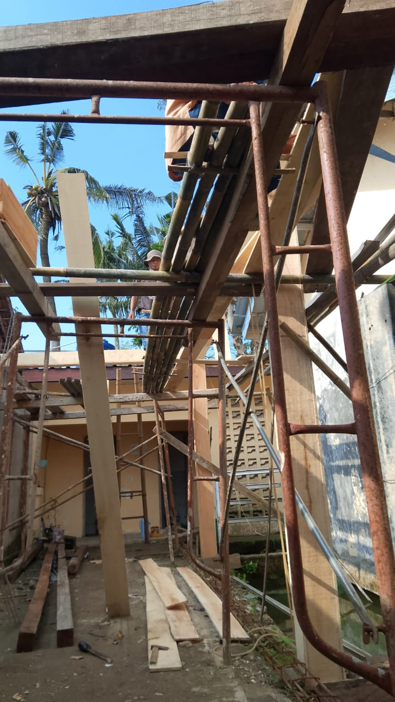
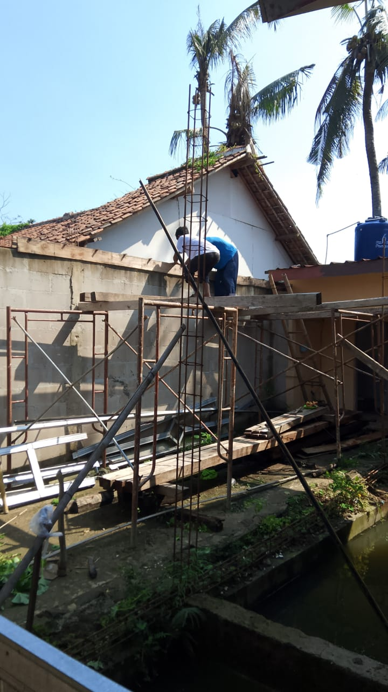

Optimalisasi Lahan: Ponpes Daarul Khoirot Al-Madani Bangun Kobong Santri Model Panggung
KARAWANG – Guna meningkatkan daya tampung serta kenyamanan fasilitas mukim para santri, Pondok Pesantren Daarul Khoirot Al-Madani Karawang resmi memulai proyek pembangunan fasilitas asrama (kobong) baru. Konstruksi ini memanfaatkan area kosong berupa lorong pembatas yang terletak di antara bangunan dapur utama dan fasilitas MCK.
Sebelum proyek ini berjalan, lorong tersebut difungsikan sebagai area jemuran pakaian sehari-hari. Guna memaksimalkan keterbatasan lahan tanpa mengorbankan sirkulasi udara dan fungsi jemuran di bawahnya, pihak pengelola pondok merancang infrastruktur ini dalam bentuk Kobong Panggung. Dengan konsep ini, area lantai dasar tetap dapat dimanfaatkan secara fleksibel, sementara lantai atas dioptimalisasi penuh menjadi ruang hunian santri yang representatif.
Spesifikasi Struktur Bangunan
Sesuai dengan rancangan teknis pertukangan, bangunan asrama panggung ini direncanakan terbagi menjadi 3 pintu kamar (kobong) terpisah. Mengingat beban bangunan lantai atas yang cukup masif, seluruh tiang penyangga utama asrama panggung dipastikan menggunakan konstruksi beton cor bertulang demi menjamin kekuatan struktur jangka panjang serta keselamatan para santri.
Dokumentasi Progress Lapangan





Rencana Anggaran Biaya (RAB)
Seluruh pengerjaan proyek dari tahap penyiapan lahan, material beton cor bertulang, kayu penunjang struktur panggung, hingga pengerjaan 3 unit pintu kamar diproyeksikan memakan waktu beberapa pekan ke depan dengan rincian pembiayaan sebagai berikut:
Pihak lembaga memohon doa serta dukungan dari segenap wali santri, jamaah, dan para donatur agar seluruh proses pembangunan asrama panggung ini diberikan kelancaran tanpa ada hambatan, sehingga dapat segera digunakan demi kemaslahatan menuntut ilmu di Ponpes Daarul Khoirot Al-Madani.
Khidmatul Ma'had – Tim Sarpras.